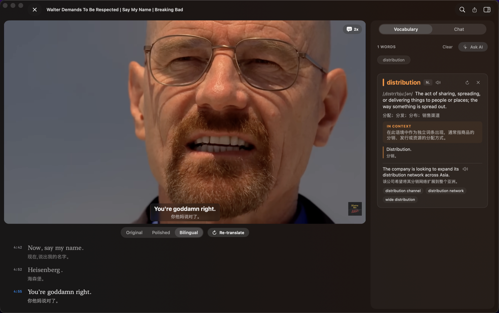
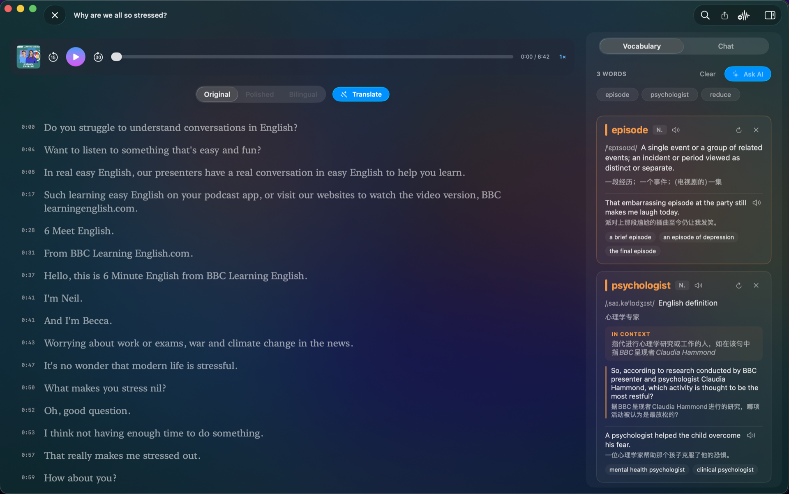
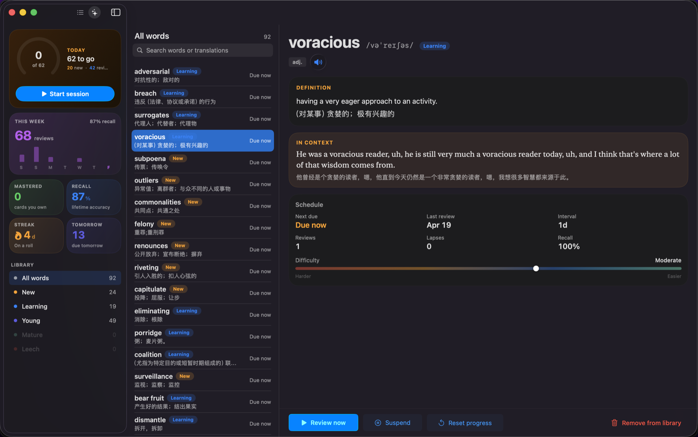
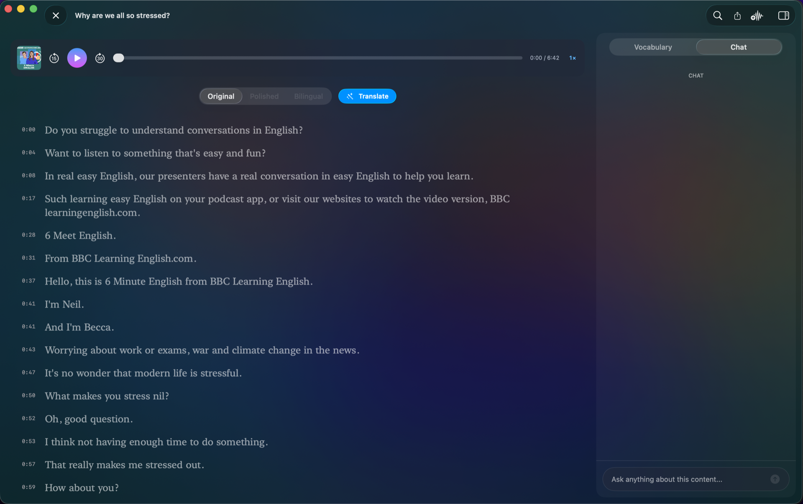
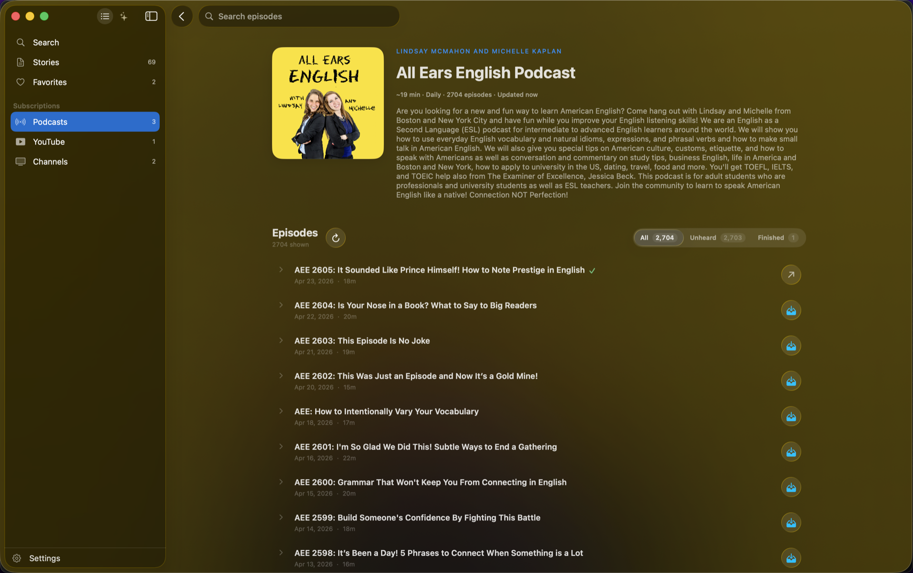
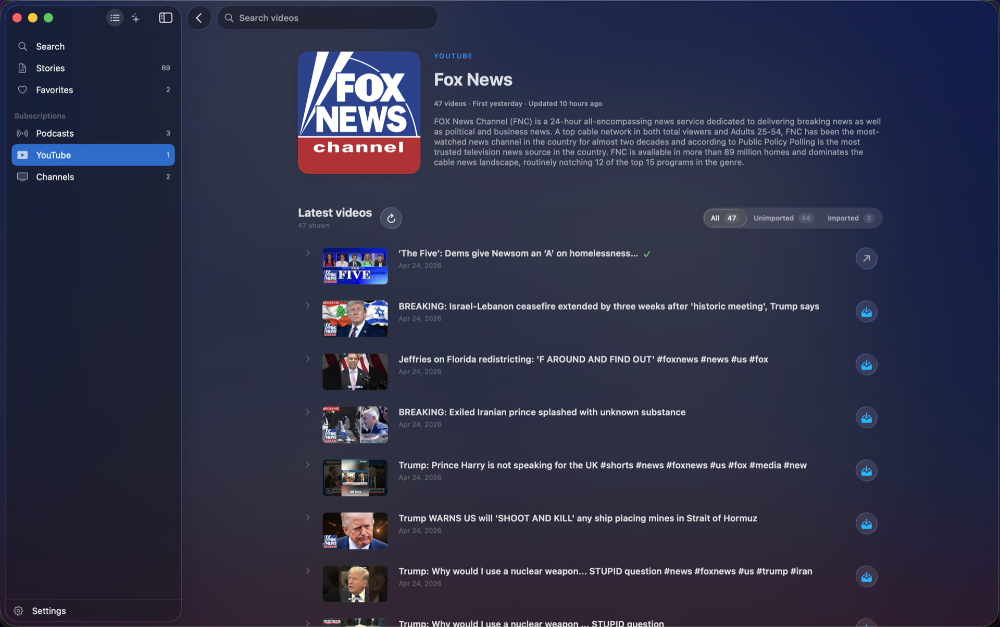

Native macOS & iOS. Transcribe podcasts, YouTube, and live streams. Learn vocabulary in context. Your data stays local.

Not another flashcard app. A desktop-grade tool for studying the real material you actually want to understand.
Click a word, drag a phrase, or select a whole sentence. The AI decides what kind of help you need — definition, collocations, example sentences, or grammar analysis — and delivers it in your target language, always with the source context attached.

Every word you tapped shows up in a spaced-repetition queue. The SM-2 scheduler decides when to bring each card back — so the words you half-remembered in that Breaking Bad clip actually stick.

Stuck on a joke, a cultural reference, or a sentence with a subjunctive you've never seen? Ask. The AI answers with the full transcript as context — no copy-pasting into another app.

Plug in a live HLS stream — a Spanish news channel, a Japanese weather broadcast, a German radio talk — and watch bilingual subtitles appear as they're spoken. Every phrase you catch is a tap away from a definition.
Paste a podcast RSS, a YouTube channel URL, or an M3U playlist — ListenWise pulls the latest episodes and keeps track of which you've imported. The library is a learning queue, not a content-discovery black hole.


Paste a podcast, a YouTube channel, a live stream URL, or drag an audio file.
Apple Speech and FluidAudio do the heavy lifting locally. Nothing leaves your Mac unless you ask for translation.
Click words. Ask the AI. Save vocabulary for review. Export to Markdown when you want to take notes elsewhere.
macOS 26 Tahoe · iOS 26. Free while in development.
~7 MB · Signed & notarized · Requires macOS 26 Tahoe
No. Transcription runs on-device via Apple Speech. AI features (translation, vocabulary, chat) need any compatible provider: OpenRouter, Anthropic, OpenAI, Ollama (local), or Apple Foundation. You pick.
Audio stays local. Transcripts stay local. Only text sent to the AI provider you've configured leaves — and only when you trigger it. Nothing is mined in the background.
Any language Apple's on-device Speech framework supports — English, Chinese, Japanese, French, German, Spanish, Korean, and more. Translation target is per-story.
A single-developer indie project. Built by someone who wanted to learn languages from the podcasts and YouTube channels they already listen to, and couldn't find a tool that did it well.
Yes. The iOS build shares the same codebase — transcribe, learn, and sync across your Mac and iPhone via iCloud.
ListenWise uses public HLS (m3u8) URLs. If a stream is public, you can tune in. It doesn't bypass authentication.